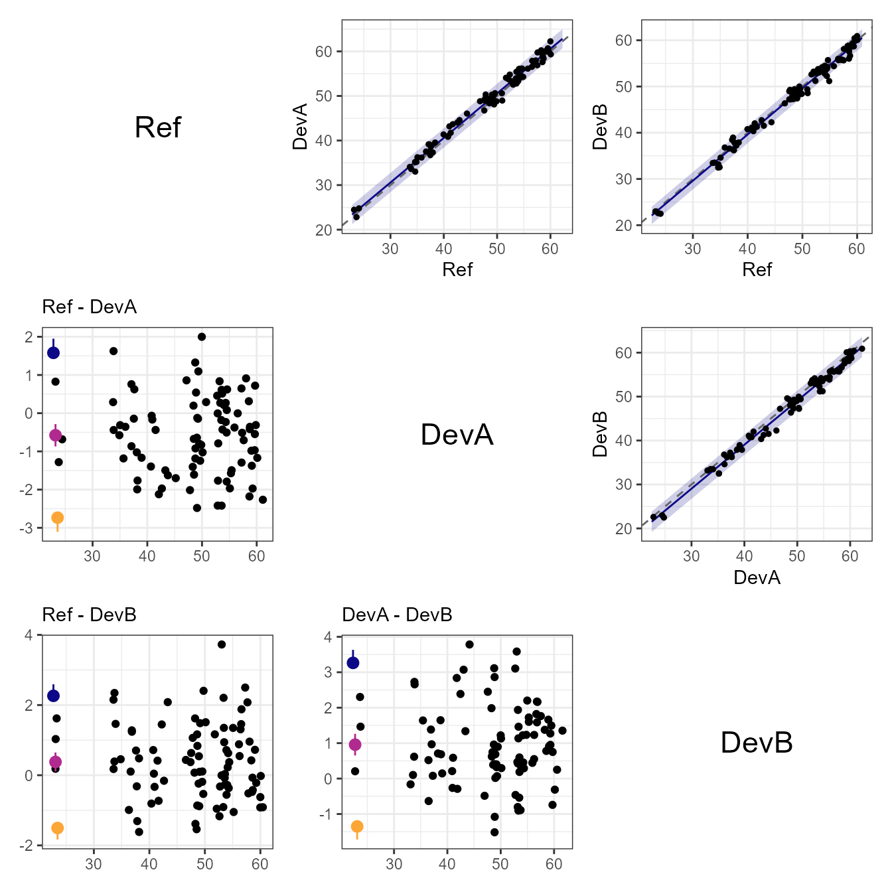
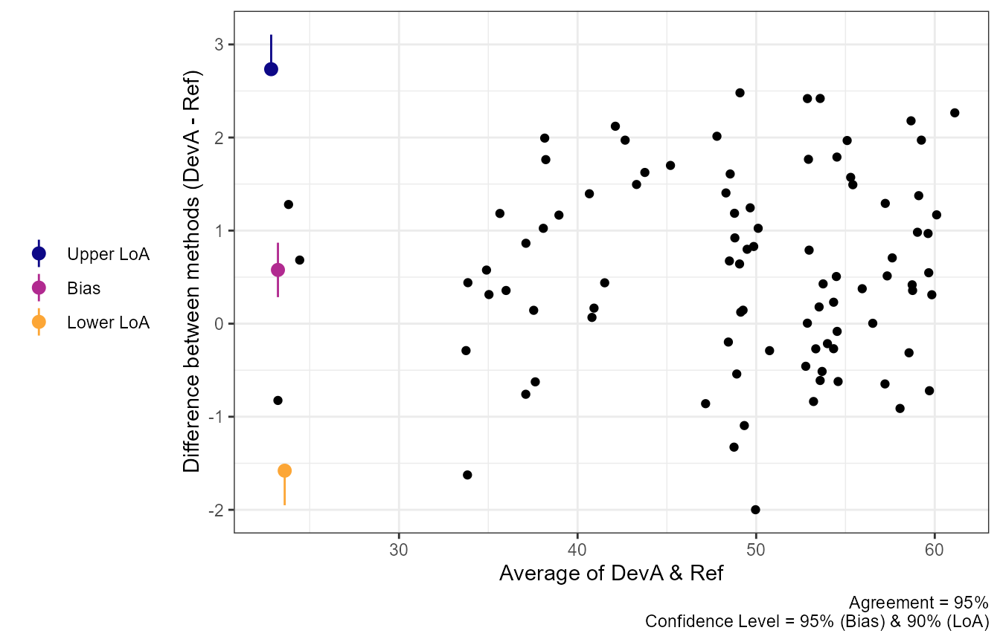
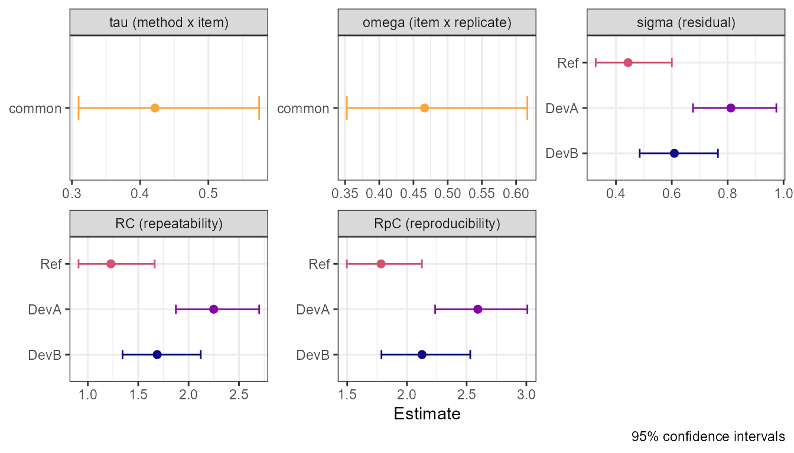
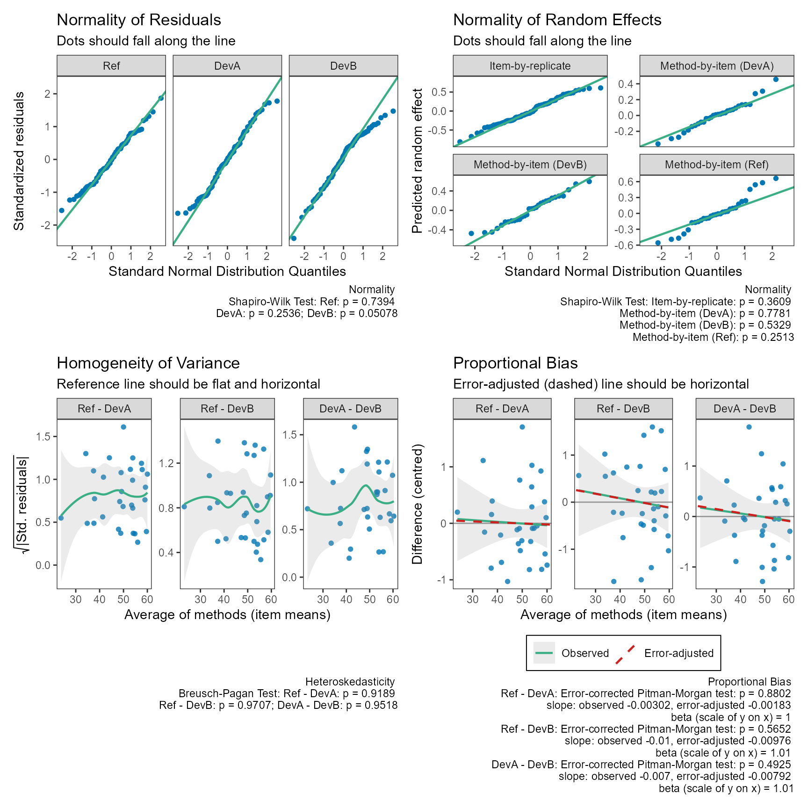

Comparing Several Methods with Replicate Measurements
Aaron R. Caldwell
Last Updated: 2026-10-30
Source:vignettes/method_comparison_vc.Rmd
method_comparison_vc.Rmdagreement_limit() and tolerance_limit()
compare two methods supplied as paired columns. When a
study measures each item with several methods, or
measures it more than once with each method, the
variance component model of Carstensen et al. (2008) and Carstensen (2010) uses all of the data in one
model. method_vc() fits that model and reports, for every
pair of methods, the bias, the limits of agreement (or tolerance
limits), the variance components behind them, and the repeatability of
each method.
The data must be in the long format: one row per measurement, with
columns for the value, the method, the item (subject), and, with
replicates, the replicate. mc_long() converts data with one
column per method.
Why paired differences are not enough with replicates
Limits of agreement describe the difference between a single measurement by each method on a new item. With replicates, two shortcuts are tempting, and both get this wrong:
- Averaging the replicates within each item before taking differences removes part of the measurement error, so the SD of the differences of the means is too small for single measurements.
- Treating every replicate pair as an independent item gets the SD about right, but the pairs from the same item are correlated, so the confidence intervals (and the bias SE) are too narrow, and the pairing of exchangeable replicates is arbitrary.
A small simulation shows the first problem. Two methods measure 40
items 3 times each. The truth attribute of simulated data
holds the true SD of the difference between single measurements.
dat = sim_methods(n_items = 40, n_reps = 3, methods = c("A", "B"),
alpha = c(0, 0.2), tau = 0.3, sigma = c(0.5, 0.7),
seed = 42)
attr(dat, "truth")$pairs
#> # A tibble: 1 × 7
#> method1 method2 bias sd lower_loa upper_loa constant_bias
#> <chr> <chr> <dbl> <dbl> <dbl> <dbl> <lgl>
#> 1 A B -0.2 0.959 -2.08 1.68 TRUE
# SD of the differences of the item means: too small
item_means = tapply(dat$y, list(dat$id, dat$method), mean)
sd(item_means[, "A"] - item_means[, "B"])
#> [1] 0.5968088
# the variance component model
fit_ab = method_vc(dat, y = "y", method = "method", id = "id",
replicate = "repl")
fit_ab$limits[, c("bias", "sd", "lower_loa", "upper_loa")]
#> # A tibble: 1 × 4
#> bias sd lower_loa upper_loa
#> <dbl> <dbl> <dbl> <dbl>
#> 1 -0.348 0.883 -2.08 1.38The model separates the variation of the method-by-item effects
(tau) from the measurement error of each method
(sigma), and recombines them for single measurements.
Linked or exchangeable replicates?
This is a question about the design, not something to test from the data (Carstensen 2010, ch. 5):
-
Exchangeable
(
replicates = "exchangeable", the default): the replicates of an item by one method are interchangeable, and replicate 1 by method A has nothing more to do with replicate 1 by method B than with replicate 2. For example, each method measures a sample in random order, or on different days. -
Linked (
replicates = "linked"): all methods measure the item on the same occasion, so replicateris a shared occasion. For example, two oximeters read at the same time, three times per patient. Measurements on the same occasion share an item-by-replicate effect (omega) that does not affect the difference between methods on that occasion.
With linked replicates, replicate must identify the
occasion in the same way for all methods.
The variance component model
For method \(m\), item \(i\), and replicate \(r\),
\[ y_{mir} = \alpha_m + \mu_i + a_{ir} + c_{mi} + e_{mir}, \]
where
- \(\alpha_m\) is the method mean, so \(\alpha_m - \alpha_k\) is the bias between methods \(m\) and \(k\);
- \(\mu_i\) are fixed item effects (no assumption about the distribution of the true values);
-
\(c_{mi} \sim N(0, \tau_m^2)\) is
the method-by-item interaction: the persistent
deviation of method \(m\) for item
\(i\) (a “matrix effect”);
tau = "common"assumes one \(\tau\) for all methods,tau = "method"(three or more methods) a separate one for each; - \(a_{ir} \sim N(0, \omega^2)\) is the item-by-replicate effect (linked replicates only), shared by all methods on the same occasion;
- \(e_{mir} \sim N(0, \sigma_m^2)\) is the measurement error of method \(m\).
The variance of the difference between single measurements by methods \(m\) and \(k\) on a new item, on the same occasion, is
\[ V_{mk} = \tau_m^2 + \tau_k^2 + \sigma_m^2 + \sigma_k^2 , \]
and the limits of agreement are \(\alpha_m
- \alpha_k \pm z \sqrt{V_{mk}}\). With linked replicates \(\omega\) cancels, because both methods
share the occasion. If the methods would be applied on different
occasions in practice, include_omega = TRUE adds \(2\omega^2\).
Without replicates, the method-by-item variation cannot be separated
from the measurement error: with two methods only \(V_{12}\) can be estimated (the classical
paired-difference analysis, identical to
agreement_limit()), and with three or more methods the
method-specific residual SDs absorb \(\tau_m\).
A worked example: three methods, linked replicates
dat3 = sim_methods(n_items = 30, n_reps = 3,
methods = c("Ref", "DevA", "DevB"),
alpha = c(0, 0.6, -0.3), mu_mean = 50, mu_sd = 8,
tau = 0.5, omega = 0.6, sigma = c(0.4, 0.8, 0.6),
replicates = "linked", seed = 2024)
head(dat3)
#> # A tibble: 6 × 4
#> id method repl y
#> <int> <fct> <int> <dbl>
#> 1 1 Ref 1 56.6
#> 2 1 Ref 2 57.6
#> 3 1 Ref 3 57.3
#> 4 1 DevA 1 57.9
#> 5 1 DevA 2 59.8
#> 6 1 DevA 3 58.0
fit = method_vc(dat3, y = "y", method = "method", id = "id",
replicate = "repl", replicates = "linked")
fit
#> Variance Component Limits of Agreement (LoA)
#> 95% LoA @ 95% Confidence
#> Linked replicates; common method-by-item variance (tau) (30 items, 3 methods)
#>
#> Methods Bias Bias CI Lower LoA Upper LoA LoA CI
#> Ref - DevA -0.5774 [-0.8700, -0.2848] -2.7343 1.5795 [-3.1057, 1.9509]
#> Ref - DevB 0.3793 [ 0.1095, 0.6491] -1.5044 2.2630 [-1.8325, 2.5911]
#> DevA - DevB 0.9567 [ 0.6511, 1.2622] -1.3503 3.2637 [-1.7192, 3.6325]
#> SD
#> 1.1005
#> 0.9611
#> 1.1771
#>
#> LoA CI: one-sided 95% bounds (outer ends of 90% CIs) for an intersection-union test;
#> not a joint 95% interval for the LoA
#>
#> Variance Components (SD)
#> Component SD 95% CI
#> tau 0.4218 [0.3097, 0.5745]
#> omega 0.4662 [0.3525, 0.6165]
#> sigma (Ref) 0.4435 [0.3277, 0.6002]
#> sigma (DevA) 0.8115 [0.6759, 0.9742]
#> sigma (DevB) 0.6092 [0.4851, 0.7651]
#>
#> Repeatability Coefficients (95%)
#> Method RC RC CI RpC RpC CI
#> Ref 1.2293 [0.9083, 1.6636] 1.7835 [1.4963, 2.1257]
#> DevA 2.2493 [1.8735, 2.7004] 2.5940 [2.2365, 3.0087]
#> DevB 1.6886 [1.3445, 2.1207] 2.1263 [1.7866, 2.5306]
#> RC: limit for the difference between two measurements by a method under the same conditions
#> RpC: the same limit across replicate occasions (includes the item-by-replicate variation)The printed table has one row per pair (first minus second method in
the order of the factor levels; the first level is the reference).
summary() adds the design, the standard errors and degrees
of freedom:
summary(fit)
#> Variance Component Model for Method Comparison
#> Model: method and item effects, random method-by-item and item-by-replicate effects, method-specific residual SDs (lme)
#>
#> Design: number of items by method and number of replicates
#> method 3
#> Ref 30
#> DevA 30
#> DevB 30
#>
#> Bias (method1 - method2)
#> method1 method2 bias se df lower.CL upper.CL
#> Ref DevA -0.5774 0.1462 58 -0.8700 -0.2848
#> Ref DevB 0.3793 0.1348 58 0.1095 0.6491
#> DevA DevB 0.9567 0.1526 58 0.6511 1.2622
#>
#> Variance components (SD)
#> component method sd var lower upper df
#> tau <NA> 0.4218 0.1779 0.3097 0.5745 20.13
#> omega <NA> 0.4662 0.2173 0.3525 0.6165 24.59
#> sigma Ref 0.4435 0.1967 0.3277 0.6002 20.98
#> sigma DevA 0.8115 0.6585 0.6759 0.9742 57.48
#> sigma DevB 0.6092 0.3711 0.4851 0.7651 36.99
#>
#> Limits of agreement (95%, iu bounds at 95% confidence)
#> method1 method2 bias sd df_sd lower_loa upper_loa lower_loa_ci
#> Ref DevA -0.5774 1.1005 102.0 -2.734 1.579 -3.106
#> Ref DevB 0.3793 0.9611 106.1 -1.504 2.263 -1.832
#> DevA DevB 0.9567 1.1771 124.8 -1.350 3.264 -1.719
#> upper_loa_ci
#> 1.951
#> 2.591
#> 3.633
#>
#> Repeatability
#> method sigma rc rc_lower rc_upper rpc rpc_lower rpc_upper
#> Ref 0.4435 1.229 0.9083 1.664 1.783 1.496 2.126
#> DevA 0.8115 2.249 1.8735 2.700 2.594 2.236 3.009
#> DevB 0.6092 1.689 1.3445 2.121 2.126 1.787 2.531confint() gives the intervals for the biases and the
SDs, at any level:
confint(fit, level = 0.90)
#> 5 % 95 %
#> bias_Ref-DevA -0.8217098 -0.3330737
#> bias_Ref-DevB 0.1539622 0.6046065
#> bias_DevA-DevB 0.7015143 1.2118379
#> tau 0.3254752 0.5466527
#> omega 0.3687295 0.5894054
#> sigma_Ref 0.3440313 0.5716849
#> sigma_DevA 0.6960652 0.9460316
#> sigma_DevB 0.5031770 0.7375923model_equation() writes the fitted model with its
estimates:
model_equation(fit, use_coefs = TRUE)\[ \begin{aligned} y_{mir} &= \alpha_{m} + \mu_{i} + a_{ir} + c_{mi} + e_{mir}, \quad \alpha_{\mathrm{Ref}} = 48.442,\ \alpha_{\mathrm{DevA}} = 49.019,\ \alpha_{\mathrm{DevB}} = 48.063 \\ a_{ir} &\sim N(0,\, 0.466^{2}), \quad c_{mi} \sim N(0,\, 0.422^{2}) \\ e_{mir} &\sim N(0,\, \sigma^{2}_{m}), \quad \sigma_{\mathrm{Ref}} = 0.443,\ \sigma_{\mathrm{DevA}} = 0.811,\ \sigma_{\mathrm{DevB}} = 0.609 \\ & \textstyle\sum_{i} \mu_{i} = 0 \end{aligned} \]
The matrix plot shows every pair. Above the diagonal each method is plotted against the other, with the line of identity (dashed) and the constant-bias conversion line with its prediction limits; below the diagonal are the Bland-Altman plots.
plot(fit, type = "matrix", pair_seed = 1)
A single pair can be plotted in either direction. As in
agreement_limit(), the bias and limits are drawn to the
left of the data, with their confidence intervals; delta
adds a maximal allowable difference and geom changes how
the data are shown.

The variance components, with confidence intervals, and the repeatability coefficients:
plot(fit, type = "vc")
The confidence intervals for the SDs come from the approximate
covariance of the variance parameters of the fitted model (Wald
intervals on the log scale). The SD of each difference gets
Satterthwaite degrees of freedom (df_sd) from the same
covariance, which accounts for the correlation between the estimated
components.
Agreement or tolerance limits
interval = "agreement" (default) gives the limits of
agreement with confidence bounds computed by the MOVER (Donner and Zou
2012), as in agreement_limit().
interval = "tolerance" gives prediction limits and
tolerance limits as in tolerance_limit(): the prediction
limits are expected to contain a single new difference with probability
pred_level, and the tolerance limits are their confidence
bounds. bound_type has the same meaning in both, and in
tolerance mode it affects only the tolerance limits:
-
"iu": a one-sidedconf_levelbound on each limit; use for an intersection-union test of whether both limits lie within a maximal allowable difference. These are not a joint interval. The default for agreement. -
"joint": joint confidence for both limits (agreement), or apred_level-content,conf_level-confidence tolerance interval: with confidenceconf_level, at leastpred_levelof the differences lie within the limits. The default for tolerance.
method_vc(dat3, y = "y", method = "method", id = "id",
replicate = "repl", replicates = "linked",
interval = "tolerance")
#> Variance Component Prediction and Tolerance Limits
#> 95% Content @ 95% Confidence
#> Linked replicates; common method-by-item variance (tau) (30 items, 3 methods)
#>
#> Methods Bias Bias CI Prediction Interval Tolerance Limits
#> Ref - DevA -0.5774 [-0.8700, -0.2848] [-2.7793, 1.6245] [-3.0388, 1.8840]
#> Ref - DevB 0.3793 [ 0.1095, 0.6491] [-1.5448, 2.3033] [-1.7670, 2.5256]
#> DevA - DevB 0.9567 [ 0.6511, 1.2622] [-1.3924, 3.3058] [-1.6421, 3.5555]
#> SD
#> 1.1005
#> 0.9611
#> 1.1771
#>
#> Prediction interval: expected to contain a single new difference with probability 95%
#> Tolerance limits: with 95% confidence, at least 95% of differences lie within the limits
#>
#> Variance Components (SD)
#> Component SD 95% CI
#> tau 0.4218 [0.3097, 0.5745]
#> omega 0.4662 [0.3525, 0.6165]
#> sigma (Ref) 0.4435 [0.3277, 0.6002]
#> sigma (DevA) 0.8115 [0.6759, 0.9742]
#> sigma (DevB) 0.6092 [0.4851, 0.7651]
#>
#> Repeatability Coefficients (95%)
#> Method RC RC CI RpC RpC CI
#> Ref 1.2293 [0.9083, 1.6636] 1.7835 [1.4963, 2.1257]
#> DevA 2.2493 [1.8735, 2.7004] 2.5940 [2.2365, 3.0087]
#> DevB 1.6886 [1.3445, 2.1207] 2.1263 [1.7866, 2.5306]
#> RC: limit for the difference between two measurements by a method under the same conditions
#> RpC: the same limit across replicate occasions (includes the item-by-replicate variation)The bounds rely on large-sample approximations for the variance components. In simulations with 15 to 60 items, 2 or 3 replicates, and 2 or 3 methods (95% targets), the one-sided bounds of the limits of agreement covered the true limits 92% to 96% of the time, and the joint tolerance limits 92% to 96%. Coverage was lowest (about 91% to 93%) with only 15 items, so with few items the bounds should be read as slightly optimistic.
A note on MethComp’s multiplier of 2
MethComp, and the examples in Carstensen (2010), compute the limits of
agreement as the bias \(\pm 2\) SD, so
method_vc() with the defaults gives limits about 2%
narrower than MethComp. The 2 is a rounded multiplier. It is somewhat
larger than \(z_{0.975} = 1.96\), which
leaves some room for the uncertainty in the estimated SD, but it does
not correspond to a stated coverage or confidence. SimplyAgree keeps the
two parts separate: \(z\) (from
pred_level) defines the limits as percentiles of the
differences, and the uncertainty in estimating them is stated explicitly
by the confidence bounds (conf_level) or by tolerance
limits. With 30 differences, for example, accounting for that
uncertainty gives a multiplier of about 2.55 (a 95%-content,
95%-confidence tolerance interval) to 2.61 (one-sided 95% bounds on each
limit), well beyond 2; see
vignette("agreement_analysis").
To reproduce MethComp’s limits and repeatability coefficients, choose
pred_level so that \(z =
2\), i.e., pred_level = 2 * pnorm(2) - 1 (about
95.45%):
method_vc(dat3, y = "y", method = "method", id = "id",
replicate = "repl", replicates = "linked",
pred_level = 2 * pnorm(2) - 1)$limits[, c("method1", "method2",
"lower_loa", "upper_loa")]
#> # A tibble: 3 × 4
#> method1 method2 lower_loa upper_loa
#> <chr> <chr> <dbl> <dbl>
#> 1 Ref DevA -2.78 1.62
#> 2 Ref DevB -1.54 2.30
#> 3 DevA DevB -1.40 3.31Repeatability and reproducibility
With replicates, each method’s measurement error gives its repeatability coefficient (Carstensen 2010, ch. 9),
\[ RC_m = z \sqrt{2}\, \sigma_m , \]
the value that the absolute difference between two measurements by
the method on the same item, under the same conditions, should not
exceed with probability pred_level (about \(2.77\sigma_m\) for 95%). With linked
replicates, the reproducibility coefficient \(RpC_m = z\sqrt{2}\sqrt{\sigma_m^2 +
\omega^2}\) is the same limit for two measurements on different
occasions.
fit$repeatability
#> # A tibble: 3 × 8
#> method sigma rc rc_lower rc_upper rpc rpc_lower rpc_upper
#> <chr> <dbl> <dbl> <dbl> <dbl> <dbl> <dbl> <dbl>
#> 1 Ref 0.443 1.23 0.908 1.66 1.78 1.50 2.13
#> 2 DevA 0.811 2.25 1.87 2.70 2.59 2.24 3.01
#> 3 DevB 0.609 1.69 1.34 2.12 2.13 1.79 2.53The confidence limits of \(RC_m\) are those of \(\sigma_m\), scaled. When \(\omega\) is large relative to \(\sigma_m\), the two are hard to separate and the interval for \(\sigma_m\) is wide.
Transformations
All estimates are computed on the scale set by
transform. With transform = "log", the
differences are log ratios: the biases and limits are printed as ratios,
and the SD is approximately the coefficient of variation.
dat_log = sim_methods(n_items = 40, n_reps = 2, methods = c("A", "B"),
alpha = c(0, 0.05), mu_mean = 4, mu_sd = 0.5,
tau = 0.04, sigma = c(0.05, 0.08),
transform = "log", seed = 3)
method_vc(dat_log, y = "y", method = "method", id = "id",
replicate = "repl", transform = "log")
#> Variance Component Limits of Agreement (LoA) of the Ratio
#> 95% LoA @ 95% Confidence
#> Exchangeable replicates; common method-by-item variance (tau) (40 items, 2 methods)
#> Transformation: log
#>
#> Methods Bias Bias CI Lower LoA Upper LoA LoA CI SD
#> A / B 0.959 [0.9299, 0.9891] 0.7617 1.2073 [0.7292, 1.2612] 0.1175
#>
#> LoA CI: one-sided 95% bounds (outer ends of 90% CIs) for an intersection-union test;
#> not a joint 95% interval for the LoA
#> Bias and limits are ratios (exp of the log-scale estimates); SD is on the log scale (approximately the CV)
#>
#> Variance Components (SD, log scale)
#> Component SD 95% CI
#> tau 0.0490 [0.0311, 0.0773]
#> sigma (A) 0.0583 [0.0468, 0.0727]
#> sigma (B) 0.0748 [0.0601, 0.0932]
#>
#> Repeatability Coefficients (95%, log scale)
#> Method RC RC CI
#> A 0.1617 [0.1298, 0.2014]
#> B 0.2073 [0.1665, 0.2582]
#> RC: limit for the difference between two measurements by a method under the same conditionsFor measurements bounded between 0 and 100 (e.g., oxygen saturation),
transform = "pctlogit" analyzes the logit of the proportion
(Carstensen
2010, ch. 8). Other options are "logit",
"sqrt", "asinsqrt", or a custom pair of
functions, list(fun = ..., inv = ..., name = ...). The
Bland-Altman and matrix plots back-transform the conversion lines to the
original scale.
Interpreting results on a transformed scale
With a transformation other than "log", the printed bias
and limits stay on the transformed scale. On the "pctlogit"
scale, \(\mathrm{logit}(y/100) = \log\{y/(100
- y)\}\), so a difference between methods is a difference in log
odds: \(\exp(\text{bias})\) is the
ratio of the odds of the two methods, and the limits of agreement are
limits for that odds ratio. That is correct, but rarely a useful way to
report agreement.
A constant bias on the logit scale is not constant in percentage points: it is largest near 50% and shrinks toward 0 and 100. This is the point of the transformation, but it means there is no single bias or pair of limits “in percent”. They have to be stated at a level.
sat = sim_methods(n_items = 40, n_reps = 2, methods = c("Ref", "New"),
alpha = c(0, -0.15), mu_mean = 1.5, mu_sd = 0.8,
tau = 0.15, sigma = c(0.12, 0.18),
transform = "pctlogit", seed = 7)
fit_sat = method_vc(sat, y = "y", method = "method", id = "id",
replicate = "repl", transform = "pctlogit")
fit_sat
#> Variance Component Limits of Agreement (LoA)
#> 95% LoA @ 95% Confidence
#> Exchangeable replicates; common method-by-item variance (tau) (40 items, 2 methods)
#> Transformation: pctlogit
#>
#> Methods Bias Bias CI Lower LoA Upper LoA LoA CI SD
#> Ref - New 0.1253 [0.0435, 0.207] -0.4753 0.7259 [-0.5926, 0.8431] 0.3064
#>
#> LoA CI: one-sided 95% bounds (outer ends of 90% CIs) for an intersection-union test;
#> not a joint 95% interval for the LoA
#> Estimates are on the pctlogit scale; print(x, scale = "original") gives them in original units.
#>
#> Variance Components (SD, pctlogit scale)
#> Component SD 95% CI
#> tau 0.1354 [0.0891, 0.2059]
#> sigma (Ref) 0.1100 [0.0884, 0.1370]
#> sigma (New) 0.2124 [0.1706, 0.2644]
#>
#> Repeatability Coefficients (95%, pctlogit scale)
#> Method RC RC CI
#> Ref 0.3050 [0.2450, 0.3797]
#> New 0.5887 [0.4729, 0.7328]
#> RC: limit for the difference between two measurements by a method under the same conditionsOn the analysis scale, the bias \(b\) (Ref minus New) means that Ref’s odds are \(\exp(b)\) times New’s.
Limits of agreement in original units
Often the question is simply where the differences between the two
methods fall, in the units of the measurement, without treating either
method as the reference. print(scale = "original") answers
this at a given level. A difference \(d\) on the analysis scale between two
measurements whose average (on that scale) is \(t\) corresponds to
\[ h(d) = g^{-1}(t + d/2) - g^{-1}(t - d/2) \]
in original units, where \(g^{-1}\) is the inverse transformation. At a fixed level, \(h\) is increasing in \(d\), so the limits and their confidence bounds carry over exactly, with the same coverage and confidence. The back-transformed bias is the median difference at that level, not the mean. By default the level is the median of the item averages:
print(fit_sat, scale = "original")
#> Variance Component Limits of Agreement (LoA)
#> 95% LoA @ 95% Confidence
#> Exchangeable replicates; common method-by-item variance (tau) (40 items, 2 methods)
#> Transformation: pctlogit
#>
#> Methods At Bias Bias CI Lower LoA Upper LoA
#> Ref - New 82.1714 1.8353 [0.6379, 3.033] -6.9714 10.6609
#> LoA CI
#> [-8.6964, 12.3934]
#>
#> LoA CI: one-sided 95% bounds (outer ends of 90% CIs) for an intersection-union test;
#> not a joint 95% interval for the LoA
#> Original scale (back-transformed from pctlogit) at 82.1714, the median of the item averages;
#> differences centered on that level; Bias is the median difference there
#>
#> Variance Components (SD, pctlogit scale)
#> Component SD 95% CI
#> tau 0.1354 [0.0891, 0.2059]
#> sigma (Ref) 0.1100 [0.0884, 0.1370]
#> sigma (New) 0.2124 [0.1706, 0.2644]
#>
#> Repeatability Coefficients (95%, original scale)
#> Method At RC RC CI
#> Ref 82.1714 4.4708 [3.5907, 5.5671]
#> New 82.1714 8.6384 [6.9349, 10.7634]
#> RC: limit for the difference between two measurements by a method under the same conditionsFor a full picture, give the levels that matter in practice
(supplying at implies scale = "original"):
print(fit_sat, at = c(70, 90, 98))
#> Variance Component Limits of Agreement (LoA)
#> 95% LoA @ 95% Confidence
#> Exchangeable replicates; common method-by-item variance (tau) (40 items, 2 methods)
#> Transformation: pctlogit
#>
#> Methods At Bias Bias CI Lower LoA Upper LoA LoA CI
#> Ref - New 70 2.6301 [0.9144, 4.3447] -9.9576 15.1561 [-12.3971, 17.5693]
#> Ref - New 90 1.1277 [0.3919, 1.8644] -4.2964 6.5981 [ -5.3690, 7.6900]
#> Ref - New 98 0.2457 [0.0853, 0.4063] -0.9394 1.4503 [ -1.1765, 1.6959]
#>
#> LoA CI: one-sided 95% bounds (outer ends of 90% CIs) for an intersection-union test;
#> not a joint 95% interval for the LoA
#> Original scale (back-transformed from pctlogit) at the levels in 'At';
#> differences centered on that level; Bias is the median difference there
#>
#> Variance Components (SD, pctlogit scale)
#> Component SD 95% CI
#> tau 0.1354 [0.0891, 0.2059]
#> sigma (Ref) 0.1100 [0.0884, 0.1370]
#> sigma (New) 0.2124 [0.1706, 0.2644]
#>
#> Repeatability Coefficients (95%, original scale)
#> Method At RC RC CI
#> Ref 70 6.3992 [5.1422, 7.9619]
#> New 70 12.3153 [9.9058, 15.2995]
#> Ref 90 2.7502 [2.2078, 3.4270]
#> New 90 5.3328 [4.2738, 6.6625]
#> Ref 98 0.5999 [0.4813, 0.7482]
#> New 98 1.1685 [0.9344, 1.4648]
#> RC: limit for the difference between two measurements by a method under the same conditionsSo, for example, “at a saturation of about 90%, the two methods
differ by between about −4.3 and +6.6 percentage points, and by about ±1
point near 98%”. The repeatability coefficients are converted in the
same way. The variance components are still reported on the analysis
scale, because they do not translate into a single number in original
units. The conversion panels of
plot(fit_sat, type = "matrix") show the back-transformed
conversion and prediction limits over the whole range.
A single pair of limits “averaged” over all the items would depend on
the mix of levels in the sample and would hide how the agreement changes
with the level, so it is not offered. When the range of the data is
narrow enough that the spread of the differences is roughly constant
(check with check()), an analysis without a transformation
answers the question directly.
Converting from one method to the other
predict() answers a different, directional question:
given a reading by New, what would Ref read? It starts from the
measurement by one method rather than from the average of the two, and
returns the converted value with prediction limits (the bias \(\pm z\) SD, back-transformed):
predict(fit_sat, newdata = c(70, 90, 98), from = "New", to = "Ref")
#> # A tibble: 3 × 4
#> from_value fit lower upper
#> <dbl> <dbl> <dbl> <dbl>
#> 1 70 72.6 59.2 82.8
#> 2 90 91.1 84.8 94.9
#> 3 98 98.2 96.8 99.0When New reads 90%, Ref is expected to read fit and, for
pred_level of items, lies between lower and
upper.
Checking the model
check() returns diagnostic plots in the style of
check() for agreement_limit(), each with a
subtitle saying what to look for and its test in the caption: normal QQ
plots of the residuals by method and of the predicted random effects
(Shapiro-Wilk tests), and, for each pair, the homogeneity of variance of
the differences (Breusch-Pagan test) and proportional bias (the centred
differences against the averages). The tests for each pair use the item
means, so replicates are not counted more than once. With exchangeable
replicates the measurements are paired at random, so set
pair_seed for reproducible p-values.
check(fit, pair_seed = 1)
- If the spread of the differences grows with the
level, try a transformation, such as
transform = "log". - If the bias depends on the level, a constant bias
is not adequate, and the methods are related by a slope as well as an
intercept. But a slope of the differences on the averages also appears
when the two methods have unequal measurement error alone, because \(\mathrm{cov}(D, A) = (\mathrm{var}(y_1) -
\mathrm{var}(y_2))/2\) (Bland and Altman 1999). With
replicates,
check()therefore corrects the test for each method’s measurement error, estimated from the replicates (the error-corrected Pitman-Morgan test), and draws the error-adjusted slope as a dashed line. Only a significant corrected test is evidence that the methods differ in scale; the scaled model of Carstensen (2010, ch. 7) (method_convert(bias = "scaled")) then estimates the relation. Without replicates the test cannot separate the two, andcheck()says so. With method-specifictau, the difference in method-by-item variances is also removed.
The results for each pair are attached to the output as the attribute
"prop_bias"; beta is the scale of the second
method of the pair relative to the first implied by the error-adjusted
slope.
attr(check(fit, pair_seed = 1), "prop_bias")[, c("group", "p.value",
"p.uncorrected", "beta")]
#> group p.value p.uncorrected beta
#> 1 Ref - DevA 0.8801739 0.8269011 1.001831
#> 2 Ref - DevB 0.5651662 0.5782736 1.009806
#> 3 DevA - DevB 0.4924542 0.6366668 1.007947See the “Proportional Bias” section of
vignette("agreement_analysis") for how to read the plot and
what to do with the result.